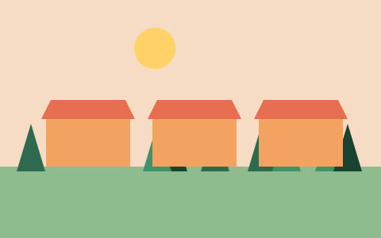

Le marché du samedi déménage
Pendant les travaux de la place du Village, le marché hebdomadaire se tiendra sur la place de la Gare, du 7 novembre au 19 décembre, de 8 h à 12 h.

Les places de stationnement de la gare seront réservées aux marchands le samedi matin.